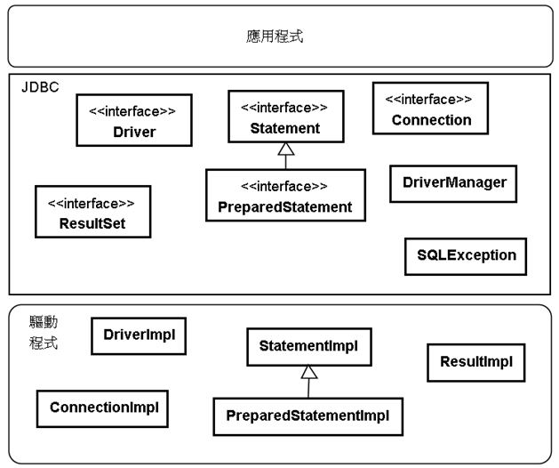
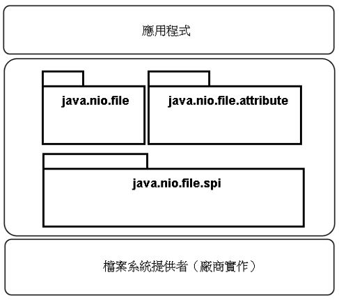

Bridge
December 27, 2021你想要寫個資料庫連線程式，不同資料庫通常有不同的通訊協定，連線不同資料庫的程式庫，在 API 上也會不同，如果應用程式直接使用這些程式庫。例如：
var conn = new XySqlConnection("localhost", "root", "1234");
conn.selectDB("gossip");
var query = conn.query("SELECT * FROM USERS");
假設這段程式碼中的 API，是某 Xy 資料庫廠商程式庫提供，應用程式要連續連線資料庫時，直接呼叫了這些 API，若哪天應用程式打算改用 Ab 廠商資料庫及其提供的連線 API，就得修改相關的程式碼。
另一個考量是，若 Xy 資料庫廠商的程式庫，底層實際使用了與作業系統相依的功能，在打算換作業系統前，就還得考量一下，是否有該平台的資料庫連線程式庫。
更換資料庫的需求並不是沒有，應用程式跨平台也是常見的需求，JDBC 就是用來解決這些問題…唉…等等…你有買過我寫的 Java 書，以上這段怎麼跟我書上寫的內容一模一樣啊？
Java 常見 Bridge 模式
Java 生態圈的好處是，某個標準經常會有可替換的實作品，你撰寫應用程式時，是基於一層抽象，例如 JDBC API，它定義了一大堆的介面，廠商會實作這些介面：

JDBC 這些介面的實作品，在 Java 生態圈稱為驅動程式（driver），你撰寫程式時是基於 JDBC API：
Connection conn = DriverManager.getConnection(…);
Statement st = conn.createStatement();
ResultSet rs = st.executeQuery("SELECT * FROM USERS");
從你的應用程式看 JDBC 與驅動程式實作，這就是 Gof 中的 Bridge 模式，你的應用程式可以變化，廠商也可以自行演化他的實作。
就獲得實作物件的過程來看，則是 factory 概念的模式實現。
若應用程式不想相依在某種實作時，Bridge 是個思考方向，Java 生態圈很常這麼做，例如 NIO2 檔案系統 API，提供一組標準介面與類別，應用程式開發者只要基於標準介面與類別進行檔案系統操作，底層實際如何實作檔案系統操作，是由檔案系統提供者負責（由廠商實作）：

若將這個概念擴大，像是 Web 容器、JPA、EJB 等標準與實作品，都算是 Bridge 模式的概念，若就原則而言，就單純只是相依反轉的實現。
邊界的整潔
在《Clean Code》第八章談到〈邊界〉，其中〈使用尚未存在的程式〉談到有一種邊界，將已知與未知分開，有時我們選擇只看到邊界為止，不再往下探索。
有時候就是這樣，你有個需求，知道有個程式庫可以完成任務，不過該程式庫其實功能龐大，你不過只是想取用一部份功能罷了，並不是想花時間全面性地瞭解它，那麼你會怎麼引用這個程式庫呢？直接在各個需要的程式碼角落，引用該程式庫相關功能？
如果有一天，你發現另一個更簡單的第三方程式庫，可以用來取代先前功能強大（但其實你很多功能用不到）的第三方程式庫呢？到處找哪邊用到了前一個程式庫拔掉它換成另一個？
你應該根據需求建立一個邊界，具體而言，根據你想完成的任務，自訂一組 API 介面，應用程式使用這組介面，然而你想使用的第三方程式庫，會實現這組介面規範的行為。
如果有一天，你發現另一個更簡單的第三方程式庫，那麼只要處理邊界，也就是實作你自訂的 API 介面就可以了，不必在應用程式裡到處翻找需要修改的地方。
你會為了使用第三方程式庫，特別建立一個邊界來維持程式碼的整潔嗎？有時候第三方程式的使用，本來就會座落在某個層次或某個位置，如果不致於難管理，是也不用特別建立邊界，畢竟函式或類別，本身就是種邊界了。
不過，若你發現第三方程式庫，會在軟體裡到處生根的話，就得小心一些了（像是 logging），這類第三方程式庫，最好是為它們定義邊界，就算你覺得日後沒有更換的可能，至少在程式碼日常維護上，也是會有幫助的。
Bridge？Adapter？
嗯…你可能看過《Clean Code》的〈邊界〉，也可能會有疑問，其中談到的範例，說是 Adapter，而你這邊是在談 Bridge 耶？
說過了，看事情的角度不同罷了，我想 Bob 大叔，應該是把實作品的介面，轉接到自訂 API 介面的角度來看待，而我是從應用程式與實作品可以各自演化的角度罷了。